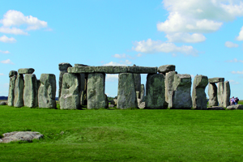
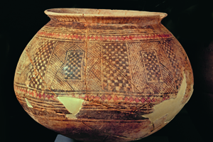
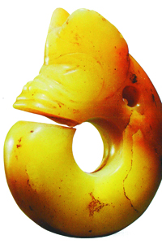

Lezione 1  La preistoria
La preistoria

-
140
425
-
210
560
-
180
780
-
230
510
-
250
165
-
250
640

STONEHENGE
Il Cromlech di Stonehenge è forse il più suggestivo monumento del periodo di passaggio tra il neolitico e l’età dei metalli: la sua destinazione originaria è ancora oggetto di dibattito, ma fu usato come sito funerario e forse come osservatorio astronomico.
MESOPOTAMIA
Un vaso in ceramica decorata proveniente dalla Mesopotamia o dalla Siria: è la testimonianza della preoccupazione estetica e ornamentale delle culture neolitiche: l’arte si svincola dall’obbligo della rappresentazione e della funzione magica per assumere un valore squisitamente decorativo. Il nome deriva dalla sua posizione geografica: in greco, infatti, Mesopotamia significa “in mezzo ai fiumi”. Proprio questa fu la fortuna della regione: le piene del Tigri e dell'Eufrate crearono le condizioni ideali per la nascita dell'agricoltura.
CINA
Il Fiume Giallo fu la culla delle civiltà cinesi, che praticavano l’agricoltura e l’allevamento.EGITTO
Le piene stagionali del Nilo permettono la nascita di una fiorente agricoltura, fondamentale per il successivo sviluppo del popolo egizio. Questi territori, insieme alla Mesopotamia, formano la “Mezzaluna fertile”.MESSICO
In modo del tutto indipendente da quanto succedeva in Africa e Asia, anche qui si svilupparono comunità sedentarie che praticavano l'agricoltura e l'allevamento. INDIA
Lungo il corso del fiume Indo sono stati ritrovati resti di comunità neolitiche sedentarie.